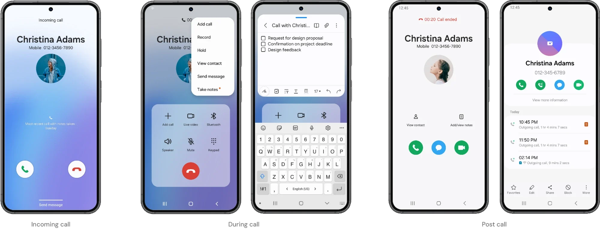
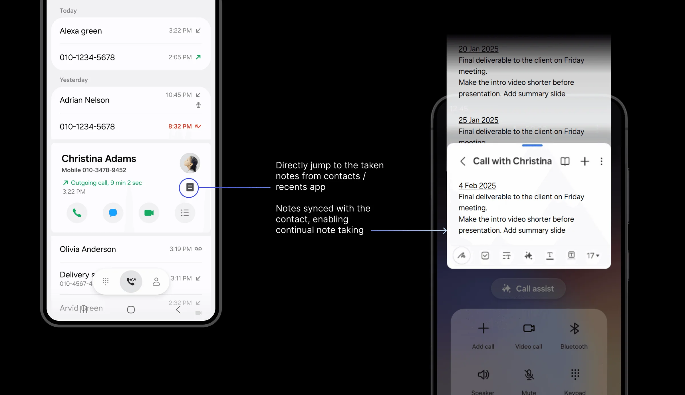

Samsung Design Delhi
In-Call Notes
How might we help people capture information during a call, without interrupting the conversation?
In-Call Notes connects the Phone app and Samsung Notes, so people can write things down during a call, and right after it, without switching apps. I was involved end to end: spotting the opportunity, defining the experience, aligning teams across products and taking it through to commercialisation.

The opportunity
After the pandemic, more work calls were happening over the phone. We observed a growing number of people using Samsung Notes during calls, and cross-app usage data confirmed it: people were repeatedly leaving active calls to open Notes.
They were writing down what they heard in the moment: phone numbers, addresses, meeting details, action items. The behaviour already existed; the experience simply wasn’t designed for it. Leaving the call, opening Notes, writing, then finding the way back was where the friction was.
The challenge
The Phone app and Samsung Notes were built by different teams, with separate priorities, roadmaps and success metrics. Neither had seen this as a shared problem.
So the work was as much about alignment as design. And the solution had to add real value for users without adding much engineering complexity.
From “a new feature for the Phone team” to “a shared experience connecting two existing Samsung products”.
That reframe brought Design, the Phone and Samsung Notes teams, and SRIN-N (Samsung’s R&D centre) around one goal: reducing friction in something people already did every day.
Design approach
Rather than rebuilding note-taking inside the Phone app, we built a bridge between two existing Samsung experiences.
- 01In-call note capture
Open Samsung Notes straight from an active call, without losing track of the conversation.
- 02Call controls stay in view
A picture-in-picture-style window keeps the call controls within reach while you write.
- 03Automatic call details
Notes keep the caller’s identity and the time of the call, so it’s easy to connect them back to the conversation later.
- 04After-call entry points
People often remember what matters right after hanging up, so note-taking is also offered once the call ends.


Impact
11Mn+
users in the first year
25Mn+
users as of 2025
Shipped with One UI 6 in 2023. Further enhancements are planned for future releases.